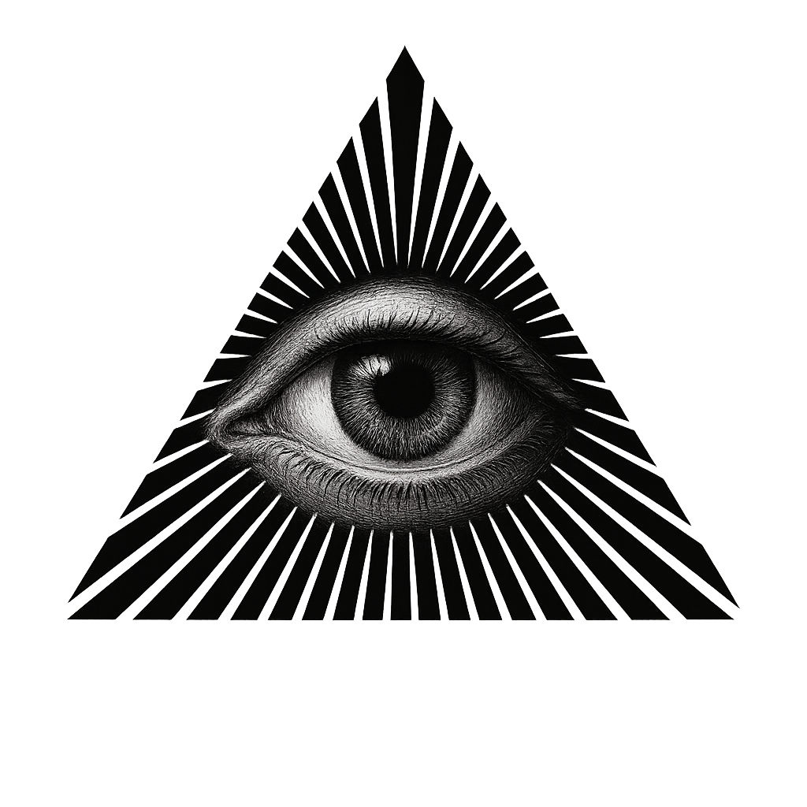
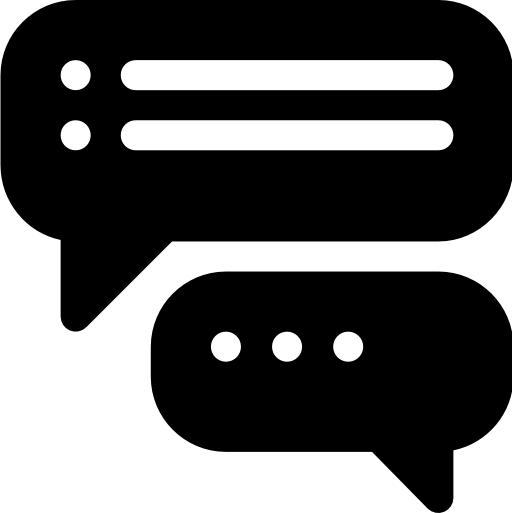
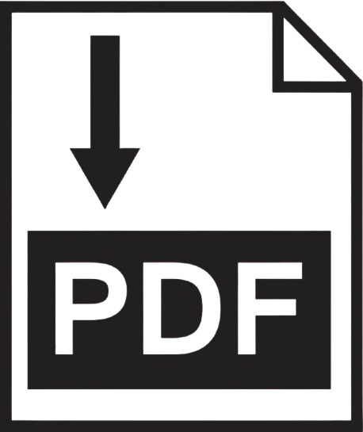
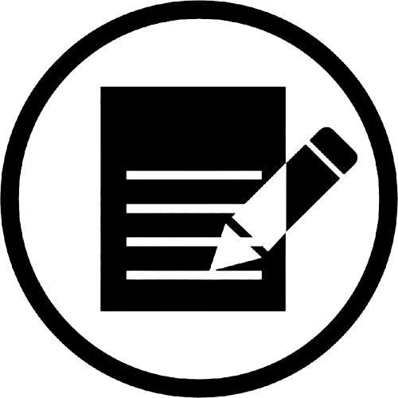

Fausto AI
☀
🌙
Historial de conversaciones
Conversaciones pasadas
Gestión de documentos
Libros/textos cargados
Temas
Transcripción del asistente aquí.

Añade conocimiento adicional
Enviar texto
Cargar Archivo
Obtener resumen